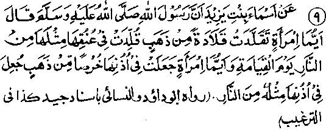

Chapter Five · Section (b): Ahadith threatening punishment for non-payment of Zakaat
7. Gold ornaments for the women

Hadith 9
Asmaa binte Yazid Radhiallaho anha reports Rasulullah Sallallaho alaihe wasallam as saying, "Any woman who wears a gold necklace round her neck shall be made to wear a similar necklace of fire round her neck on the Day of Resurrection; and any woman who puts a gold ear-ring in her ear shall have a similar ring of fire put in her ear, on the Day of Resurrection".
Note: This Hadith apparently indicates that it is unlawful for women to wear gold ornaments. Some Ulama are said that it pertains to the early period of Islam, because the Ulama are agreed to allow the wearing of gold or silver ornaments for women, as supported by many other Ahadith. Other Ulama have said that this Hadith, with many other Ahadith of the same import,' applies to those who do not pay Zakaat on their ornaments; and certain Ahadith also support this view. For example, a Hadith reports Asmaa Radhiallaho anha as saying: "I visited Rasulullah Sallallaho alaihe wasallam with my maternal aunt, both wearing gold bracelets on our hands. Rasulullah Sallallaho alaihe wasallam asked, ‘Do you pay Zakaat on your bracelets?’ and when we replied, ‘No’, he said, ‘Aren’t you afraid of having bracelets of fire put on you by Allah Ta'ala on the Day of Resurrection? Do pay Zakaat on them." (Targheeb). The Hadith clearly states that women shall be made to wear ornaments of fire on the Day of Resurrection, in case they have not paid Zakaat on their ornaments. Muslim women should be very particular about paying Zakaat, lest the ornaments adorning their persons today should become the blazing flames of Jahannam and torment their bodies, on the Day of Resurrection. The Hadith reports Asmaa Radhiallaho anha as saying that she did not pay Zakaat on the bracelets. It was perhaps because, at that time, she was ignorant of the law of Zakaat about the ornaments. The fact becomes evident from another Hadith in which she is reported as asking a question on the same point. Or, probably she regarded, ornaments to be one of the basic needs of a woman (like clothing) though, actually, it is not one of the necessities of life, but something extra. If we accept this probability, the Hadith would not be taken as referring exclusively to gold ornaments, but apply to silver ornaments as well. Aishah Radhiallaho anha says; "puce, when Rasulullah Sallallaho alaihe wasallam came to my house while I was wearing two thin bracelets of silver on my hand, he asked, ‘What is this Aishah?’ I said, "I have got these two ornaments to adorn myself for you’. Rasulullah Sallallaho alaihe wasallam asked, ‘Do you pay Zakaat on them?’ I said, ‘No’. He said, "This is sufficient to take you to the fire of Jahannam." (Targheeb).
Here, in addition to the reason mentioned under the preceding Hadith, another possible reason why she said so might be that silver bracelets are usually light and, as such, their weight is less than the prescribed limit for making Zakaat payable on them. And the saying of Rasulullah Sallallaho alaihe wasallam may be understood to mean that, if even a small ornament when taken along with others totals up to the prescribed standard, it becomes incumbent to pay Zakaat on them. It has been related in another Hadith to the effect that a woman came to Rasulullah Sallallaho alaihe wasallam accompanied by her daughter who wore two heavy gold bangles on her hands. Rasulullah Sallallaho alaihe wasallam asked her, "Do you pay Zakaat on them"? She replied, ‘No’. He then said, "Will you be glad to have Allah Ta'ala put two bangles of fire on your hands, on the Day of Resurrection?" Hearing this she placed the bangles before Rasulullah Sallallaho alaihe wasallam and said, "I give these away for the sake of Allah and His Rasulul" (Targheeb).
It was a peculiar characteristic of the Sahabah Radhiallaho anhum, men and women alike, that on hearing a command given by Allah Ta’ala or His Rasul Sallallaho alaihe wasallam, they accepted it and hastened to comply with it Without hesitation or argument
According to these Ahadith, the same rule applies both to gold and silver ornaments, and those who do not pay Zakaat on ornaments of either kind are threatened with the fire of Jahannam on the Day of Resurrection. It makes little difference, with one Hadith mentioning only gold and the other, only silver.
Some Ulama have said that all Ahadith that do not mention Zakaat and make a distinction between gold and silver, do so because of vanity in adornments of the body. Accordingly a tradition transmitted by Abu Dawood and Nasaai, also corroborates this view: "O women, don’t you consider silver good enough to make ornaments with, for adorning yourselves? I assure you that any woman who adorns herself with gold, which she displays, will be punished for it”. (Targheeb). It is commonly observed that women do not set much value upon silver ornaments, especially among those ladies who have vanity because of their so-called high birth and do not consider silver ornaments to be fit objects for display or showing their superiority. If such a woman is wearing silver bracelets she would not, at all, think of displaying them, but with gold bracelets she will, out of her vanity, try to attract the attention of other people towards these by lifting her hands to adjust her head-dress, or wave her arms pretending to drive away a fly, and when she meets a visitor or she herself goes to visit someone else, her head-dress seems to slip every now and then and she raises her hands each time to readjust it, in order to show off her bracelets. It seems that the headdress will never stay in place, and the fly she is trying to drive away will never let her alone. All these motions and gestures are mere excuses to display her gold bracelets. Therefore, it should be borne in mind that ornaments should not be worn for the sake of vanity and Zakaat should be regularly paid on the ornaments. If someone does not have due regard for both these points, she will have to suffer punishment in Jahannam.